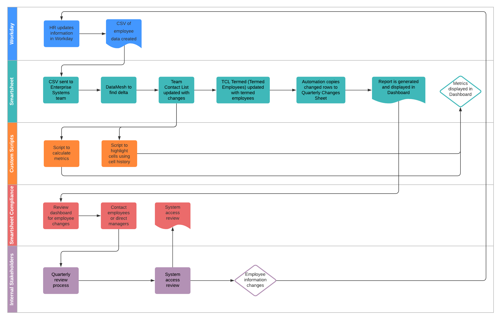

Metrics
Based on changes in job title, department, and direct manager on a Quarterly level.
Smartsheet is a collaborative work management software based out of Bellevue, WA. We worked with the Smartsheet Compliance Team led by Sam Bradley. The compliance team focuses on all compliance and security related items at Smartsheet.
Our project aims to solve a myriad of problems with the current quarterly access review process at Smartsheet. Smartsheet’s access reviews are time-consuming and draws a lot of resources.
Our Identity and Access Management Dashboard presents:
With our Dashboard, Smartsheet’s Compliance team will be able to save time and resources with the addition of having key actionable insights to employee changes.
Data flow in our IAM tool is as follows:
Metrics
Based on changes in job title, department, and direct manager on a Quarterly level.
Quarterly Changes Report
Displays exmployees that have had some part of their job related information change, filtered for the last 90 days. Updated daily.
Metrics Timeline

Visualization of change in metrics over the course of the quarter.
Data Analyst
dikkala@uw.edu
Developer and Data Analyst
somyad@uw.eduUser Research and Design
gfields5@uw.eduProduct Manager
nityak@uw.eduThis is a University of Washington Information School Capstone project for Winter/Spring 2021 sponsored by Smartsheet.
By June of 2021, we will have handed over all documentation and code to our Smartsheet.